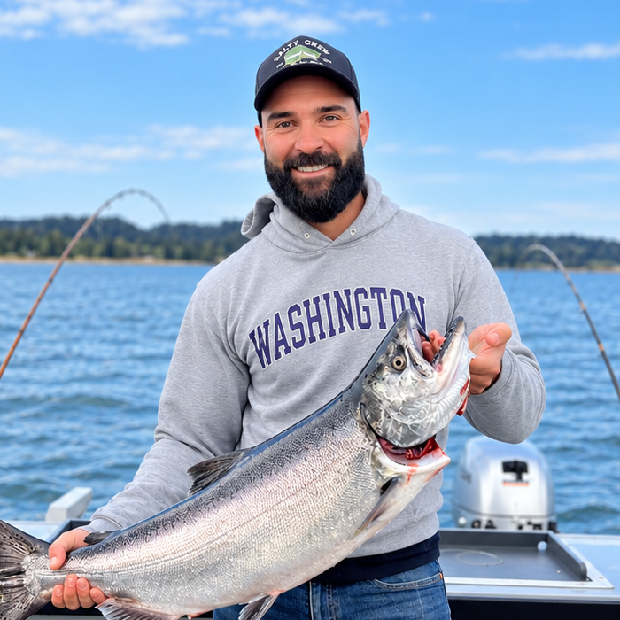

About
I’m a biomedical researcher working at the intersection of medical imaging, artificial intelligence, and clinical medicine. For the past decade, much of my work has focused on retinopathy of prematurity, taking AI-based decision support from model development and large, multi-institutional datasets through external validation across different hospitals, countries, devices, and patient populations. One of the technologies developed through this work has been recognized by the FDA as a breakthrough innovation.
I’m especially interested in what happens after a model appears to “work”: understanding where it fails, how performance changes across sites and populations, and whether it still holds up on completely new data. More recently, my work has expanded beyond imaging alone to combine imaging with clinical, physiologic, and genomic data. I also work on developing affordable imaging systems and automated diagnostic tools designed to make high-quality eye care more accessible in rural and resource-limited regions around the world.
Ultimately, I’m less interested in AI for its own sake than in building tools that are rigorous, clinically useful, and capable of surviving contact with the real world. Outside of work, I love exploring the PNW through cycling, golfing, fishing, and hanging out with my wife and our dogs.
Experience & Education
- 2024 – PresentComputational Biologist 4
Ophthalmology, Oregon Health & Science University - 2023 – PresentConsultant & Scientific Advisory Board Member
Siloam Vision - 2021 – 2024Computational Biologist 3
Ophthalmology, Oregon Health & Science University - 2016 – 2021PhD, Bioinformatics and Computational Biology
Oregon Health & Science University · NLM Fellow - 2015 – 2016Research Assistant II
Ophthalmology, Oregon Health & Science University - 2014 – 2015Research Assistant I
Ophthalmology, Oregon Health & Science University - 2012 – 2014BS, Biochemistry
Pacific Lutheran University
Publications
Loading…